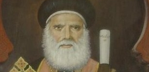

Saint Cyrille 5
Découvre l'histoire des papes de l'église copte orthodoxe.
En ce jour de l’an 1643 des martyrs (1927 après Jésus Christ) décéda le pape Cyrille (Kyrellos) V le 112ème patriarche de la prédication de saint Marc. Ce père naquit à Tazmânt proche de la ville de Béni-Soueif en Egypte en 1831 après Jésus Christ. Ces parents étaient pieux et le nommèrent Jeanet lui donnèrent une très bonne éducation. Comme il recherchait perpétuellement le calme, l’apprentissage et la méditation, il quitta le monde et se rendit au monastère al-Sourian mais son père alla le cherchait et le ramener à la maison. Toutefois, il repartit et se rendit au monastère al-Baramous et devint moine en 1850[1]. Il eut une conduite vertueuse conforme aux traditions monastique et il fut ordonné prêtre puis higoumène. Il copiait des manuscrits pour les vendre et dépenser pour les besoins du monastère. Il fut surnommé : Jean le scribe.Après le décès du pape Démitrios II les évêques, les prêtres et les notables le choisirent pour lui succéder et il fut consacré le 23 Paopi 1591 des martyrs (1874 après Jésus Christ). Il prit soin des églises et des monastères et il se préoccupa de l’instruction des prêtres en inaugurant la faculté de théologie. Il fit de nombreux déplacements pour visiter ses enfants spirituels tant en Egypte qu’au Soudan.
Il eut un différend avec le conseil financier de l’Eglise, par conséquent il se rendit au monastère d’al-Baramous et ne revint qu’après la réalisation de ses demandes.
Le pape Cyrille V édifia aussi des écoles pour améliorer l’instruction des fidèles de l’Eglise. Lorsqu’il accomplit son bon combat il décéda en paix à l’âge de 96 ans après avoir siégé sur le trône de saint Marc pendant cinquante-deux ans, neuf mois et neuf jours. Après ses funérailles, il fut enterré à la cathédrale saint Marc, à el-Azbakiya.
Poser une question
Si vous avez une question, quelque chose que vous ne comprennez pas ou une suggestion pour le site informez-le en remplissant ce formulaire !